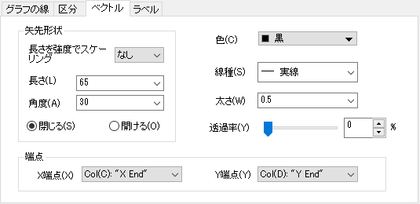
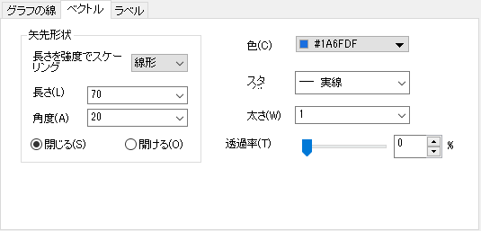
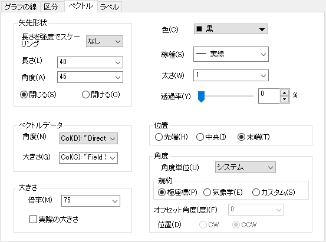
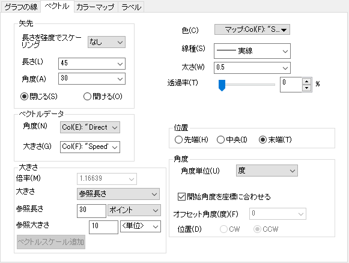
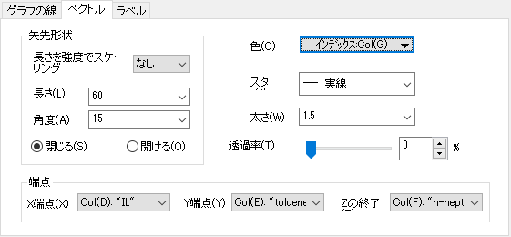

_Vector_Tab/Button_Border.png) を使用して変更することもできます。
を使用して変更することもできます。
通常の2Dベクトルグラフに加え、極座標および三点ベクトルグラフでも、作図の詳細のベクトルタブでベクトルの編集ができます。3D ベクトルグラフのベクトル編集に関しては、3Dベクトルタブを参照してください。
|  直交座標と極座標の両方のXYXYグラフのベクトルタブ |
 コンパスプロット のベクトルタブ |
|  直交座標のXYAM グラフのベクトルタブ |
 極座標のθRAM グラフのベクトルタブ |
|  三角座標のXYZXYZ ベクトルグラフのベクトルタブ |
| 長さと強度でスケーリング |
ベクトルの強度の変化に応じて矢印の長さをスケーリングします。 以下のオプションを利用できます。
|
|---|---|
| 長さ |
矢先の長さを指定します。 単位はポイントです。 |
| 角度 |
矢先の角度を決定します。 |
| 閉じる/開ける |
矢先を塗りつぶすには、閉じるラジオボタンを選択します。 矢先を塗りつぶさない(枠のみにする)には、開けるラジオボタンを選択します。 |
色ボタンからベクトル色を選択します。
ベクトルの線種を変更します。スタイルツールバーの線/境界色ツールを使用して変更することもできます。
このコンビネーションボックスでベクトルの線の太さを入力または選択します。 線の太さはポイント単位とし、1ポイント＝ 1/72インチです。
線タブのあるすべての2Dベクトルグラフで、太さドロップダウンリストで列を選択でき、線の太さをその列にマップできます。ドロップダウンリストには現在のワークシートにある列のみ表示されるのでご注意ください。
列を選択して、縮尺倍率を指定して、幅の列に値を掛けてベクトルの線の太さを定義することもできます。シンボルサイズの縮尺倍率を参照することができます。
スライダで調整するか、コンボボックスに数値を入力してベクトルに透過率を適用します。スケールは0（透明でない）から100（完全透明）まで調整できます。
特別な点の場合、 自動にチェックを付けると、他のベクトルの透過率設定に従います。特別な点の透過率を調整するには、チェックを外します。
X端点ドロップダウンリストからXYXYベクトルグラフまたは三点ベクトルグラフのXの端点の値を持つ列を選択します。
Y端点ドロップダウンリストからXYXYベクトルグラフまたは三点ベクトルグラフのYの端点の値を持つ列を選択します。
Z端点ドロップダウンリストから三点ベクトルグラフのZの端点の値を持つ列を選択します。
Note:
|
これらの制御は、XYAMベクトルまたは θRAM極ベクトルグラフにのみ適用されます。
| 角度 |
大きさコンビネーションボックスから、ベクトルの角度オフセット値を持つ列を選択します。 あるいは、このコンビネーションボックスから値を選択することができます。単位は、角度単位ドロップダウンリストから選択します。 XYAMベクトルでは、角度はX軸に平行な線を基準とし、ベクトルを二等分する方向に対して反時計回りに測定されます。 θRAM極座標ベクトルでは、角度は半径Rの円の接線から測定され、方向は極座標の角度軸の向きと開始角度を座標に合わせるオプションの設定に依存します。 |
|---|---|
| 大きさ |
大きさコンビネーションボックスから、ベクトルの大きさを持つ列を選択します。 あるいは、このコンビネーションボックスから値を選択することができます。 単位はポイントです。 |
これらの制御は、XYAMベクトルまたは θRAM極ベクトルグラフにのみ適用されます。
倍率のコンビネーションボックスから、ベクトルの長さを比例的に増加または減少させる値を選択/入力します。 例えば、ベクトルを元の長さの半分に描画するには、.5を入力します。 デフォルトの値は1で、倍率の値でベクトルの長さが決まります。
このチェックボックスにチェックを付けて、大きさの基準を選択します。
XYAMベクトルの場合：
θRAM極ベクトルの場合：
これらの制御は、XYAMベクトルまたは θRAM極ベクトルグラフにのみ適用されます。
ベクトルの先端、中央、末端に、XY/θR値を適用できます。それぞれのボタンを選択してください。
これらの制御は、XYAMベクトルまたは θRAM極ベクトルグラフにのみ適用されます。
| 角度単位 |
角度の単位を選択します。
|
|---|---|
| 規約 | このオプションはXYAMベクトルでのみ利用できます。
|
| 開始角度を座標に合わせる | このオプションは、θRAM極座標ベクトルにのみ適用されます。このチェックボックスをオンにすると、極座標ベクトルの角度オフセットの方向は以下のルールに従います。
このオプションのチェックを外すと、オフセット角度（度）および方向オプションが、XYAMベクトルの場合と同様に表示されます。 |
| オフセット角度（度） | ベクトルのオフセット角を度で指定します。ベクトルの角度の値（A）と、オフセット角度が0の場合、ベクトルは3時の方向になります。 |
| 方向 |
オフセット角度の方向を指定します。
|